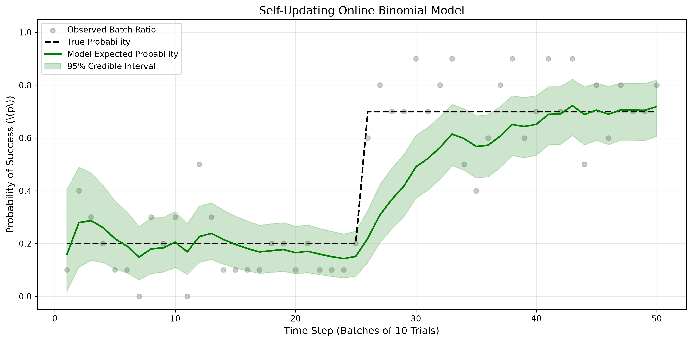

Binomial-Beta Conjugate Models with Exponential Forgetting
In machine learning, we frequently encounter binary outcomes: Did the user click the ad or not? Is the email spam or not? Did the patient recover or not? The standard statistical tool for modeling the probability of success in a sequence of independent trials is the Binomial distribution.
In this chapter, we explore the Beta-Binomial model, which is a cornerstone of Bayesian A/B testing. We will show how the standard conjugate prior can be modified with a forgetting factor to create a dynamic model that instantly adapts to changing user behaviors.
We want to estimate the unknown probability of success, \(p\). (e.g., the true click-through rate of an advertisement).
Suppose we run \(n\) trials and observe \(k\) successes. The likelihood is:
Because \(p\) must be a probability between 0 and 1, we use the Beta distribution as our conjugate prior. It is defined by two shape parameters, \(\alpha\) and \(\beta\):
Note: A uniform prior is achieved by setting \(\alpha=1, \beta=1\).
Multiplying the Likelihood and the Prior yields the Posterior:
The result is another Beta distribution with updated parameters:
The Expected Probability is the mean of the Beta distribution: \(E[p] = \frac{\alpha}{\alpha + \beta}\).
If the true probability of success is constant, the Beta-Binomial model is mathematically perfect. However, in dynamic environments (like changing user preferences or seasonal trends), the true probability shifts.
If a website has shown a 20% click rate for thousands of users, the model's parameters will be heavily skewed (e.g., \(\alpha=200, \beta=800\)). If a new UI redesign increases the true click rate to 70%, the model will be very slow to believe it. It will take hundreds of new observations to overcome its "memory" of the past.
To allow the Beta-Binomial model to track moving targets, we introduce a forgetting factor \(f\) (where \(0 < f \le 1\)). Before adding the new data, we multiply our accumulated successes and failures by \(f\).
If \(f = 0.9\), the model only retains 90% of its historical memory at every step. This creates a "sliding window" effect, allowing the model to forget outdated behavior and quickly lock onto a new probability.
The following simulation represents an online A/B test. We test 10 users per time step. For the first 50 steps, the true conversion rate is 20%. At step 50, a new feature is launched, and the true rate jumps to 70%.

import numpy as np
import matplotlib.pyplot as plt
from scipy.stats import beta
import os
# Ensure the images directory exists
os.makedirs('images', exist_ok=True)
class FastOnlineBinomialModel:
def __init__(self, alpha_prior=1.0, beta_prior=1.0, forgetting_factor=1.0):
self.alpha = alpha_prior
self.beta = beta_prior
self.ff = forgetting_factor
def update(self, successes, trials):
failures = trials - successes
# Apply forgetting factor to old memory, then add new data
self.alpha = (self.alpha * self.ff) + successes
self.beta = (self.beta * self.ff) + failures
def get_expected_probability(self):
return self.alpha / (self.alpha + self.beta)
def get_credible_interval(self, confidence=0.95):
lp = (1.0 - confidence) / 2.0
up = 1.0 - lp
return beta.ppf(lp, self.alpha, self.beta), beta.ppf(up, self.alpha, self.beta)
# 1. GENERATE DATA (True prob jumps from 0.2 to 0.7 at step 50)
np.random.seed(42)
n_steps = 100
trials_per_step = 10
data_list = []
for i in range(n_steps):
true_p = 0.2 if i < 50 else 0.7
data_list.append(np.random.binomial(trials_per_step, true_p))
# 2. INITIALIZE MODELS
standard_model = FastOnlineBinomialModel(forgetting_factor=1.0) # Static
fast_model = FastOnlineBinomialModel(forgetting_factor=0.85) # Dynamic
# Lists for plotting
std_probs, fast_probs = [], []
fast_lb, fast_ub = [], []
# 3. RUN SIMULATION
for successes in data_list:
standard_model.update(successes, trials_per_step)
fast_model.update(successes, trials_per_step)
std_probs.append(standard_model.get_expected_probability())
fast_probs.append(fast_model.get_expected_probability())
lb, ub = fast_model.get_credible_interval()
fast_lb.append(lb); fast_ub.append(ub)
# 4. PLOT
plt.figure(figsize=(12, 6))
plt.plot(range(1, n_steps + 1), [0.2]*50 + [0.7]*50, 'k--', linewidth=2, label='True Probability')
plt.plot(range(1, n_steps + 1), std_probs, 'b-', linewidth=2, alpha=0.5, label='Standard Bayes (Slow)')
plt.plot(range(1, n_steps + 1), fast_probs, 'g-', linewidth=2.5, label='Forgetting Model (Fast)')
plt.fill_between(range(1, n_steps + 1), fast_lb, fast_ub, color='green', alpha=0.15, label='Fast Model 95% CI')
plt.title('Speeding up Binomial-Beta Learning via Forgetting Factor', fontsize=14)
plt.xlabel('Time Step (Batches of 10 Trials)')
plt.ylabel(r'Probability of Success (\(p\))')
plt.ylim(-0.05, 1.05)
plt.legend(loc='upper left')
plt.grid(True, alpha=0.3)
plt.tight_layout()
# Save to the images folder
plt.savefig('images/binomial_graph.png', dpi=300, bbox_inches='tight')
plt.show()